Advent of Code
sneak peek
{kind=link}


Netflix adaptation ;)

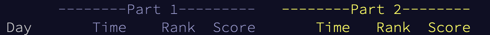
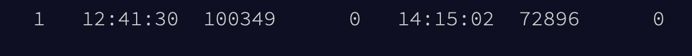
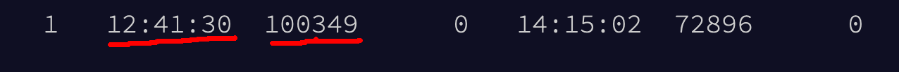
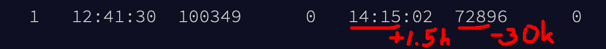
{kind=link}
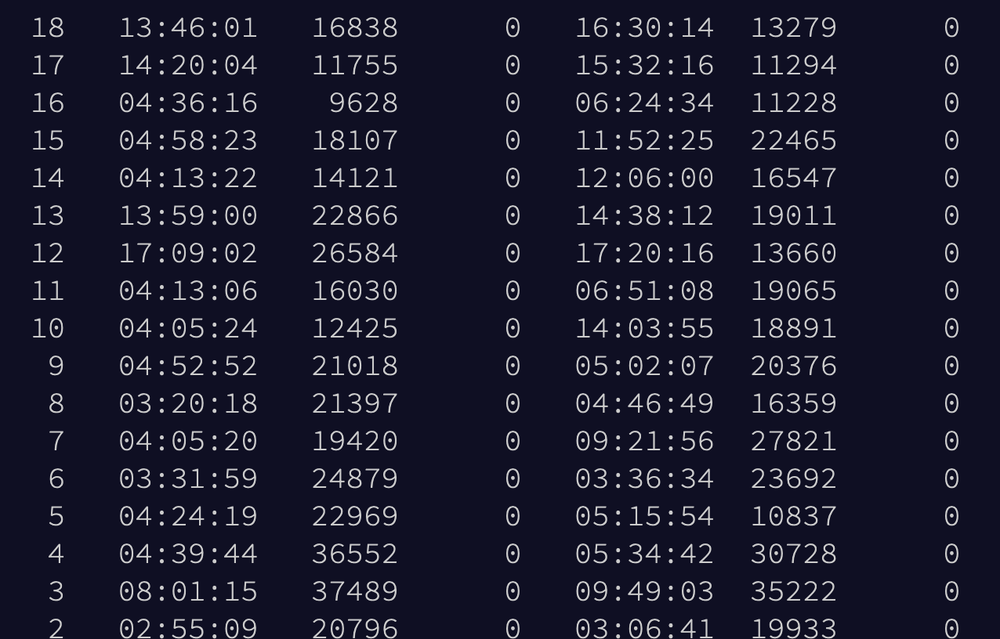
- Quick hacking in browser console
- Same + regex
- First graph
- TDD and it worked 😱

{
"name": "trying-aoc23",
"version": "0.0.1",
"description": "Trying Advent of Code for the first time",
"main": "1-1.js",
"type": "module",
"scripts": {
"test": "node --experimental-vm-modules node_modules/jest/bin/jest.js"
},
"devDependencies": {
"jest": "^29.7.0"
},
"jest": {
"testEnvironment": "node"
},
"repository": {
"type": "git",
"url": "git+https://github.com/mat3e/trying-aoc23.git"
},
"keywords": [
"Advent",
"Code"
],
"author": "mat3e",
"license": "MIT",
"bugs": {
"url": "https://github.com/mat3e/trying-aoc23/issues"
},
"homepage": "https://github.com/mat3e/trying-aoc23#readme"
}

describe('iterator', () => {
it('moves to next state - easy scenario', () => {
// given
const toTest = iterator(
`Card 172: 92 9 73 82 15 6 44 28 88 34 | 99 78 11 46 9 36 89 65 17 8 16 94 68 63 12 54 25 33 69 47 13 38 93 50 59
Card 173: 31 18 13 56 72 | 74 77 10 23 35 67 36 11`);
expect(toTest.state).toEqual(new Map([[172, 1], [173, 1]]));
// when
toTest.next();
// then
expect(toTest.state).toEqual(new Map([[172, 1], [173, 2]]));
expect(toTest.hasNext()).toBe(true);
Day 5
- First issues
-
Map? OOM - Brute force? 18m


<v p:0*2a;=list size; n(4"FRTH"(4"TOYS" ;;
;stack = [next values] [current values] dst_range src_range ln i; ;;
;depth = (n+4)+ (n+4-1) - 4 3 2 1 0;
> gk& 00g 01p v
>$ a, & v;read line; ;Vi<src?; ;Vi>ln?; ;Ni=dst+(Vi-src),size-=1;
> >&& 01g:!#v _ :3+P 3P- :0\`!] :3P \`] 4P+ 01g4+0\-L :3+L$ 01g1-01p v
>$ 0g:01p :!|!:-1 < ! | |
$^;reset; < > :P. ^ : ;i--; $ $
|`\0: -0'_^# `a: ~v#< 0 $k3 < ^ -1 < < <
;\n\n = new map; >$ v
> \a*+ ^ @,a.,a N $$(4"IMTH" D <
;we have to read the first number;
;of a new group by hand because ;
;we cant detect line breaks ;
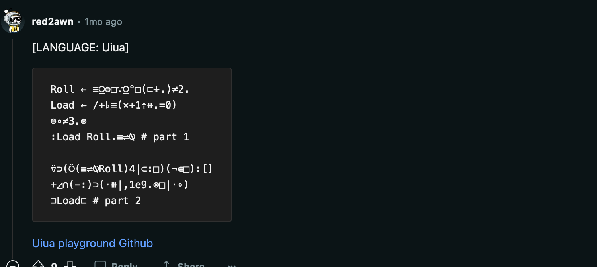
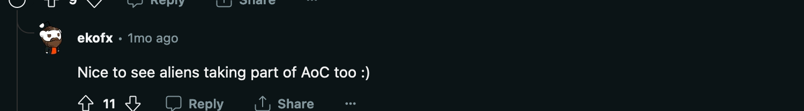
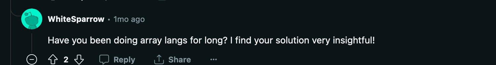
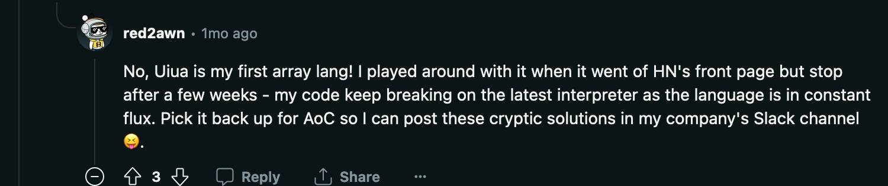

Top langs?
- Python
- Rust
- C#, JS/TS, Kotlin, Java
This and that
- Zig
- D
- APL
- Vim keystrokes
Day 5
- First issues
-
Map? OOM - Brute force? 18m

Day 8
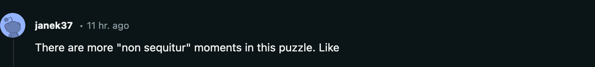
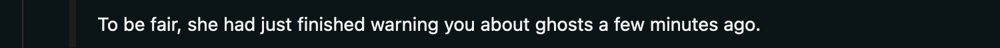
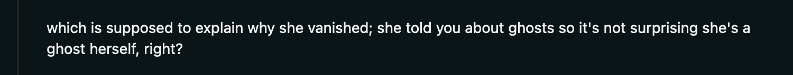
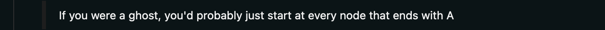
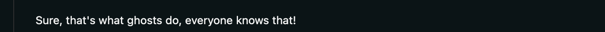
describe('parseInstructions', () => {
it('loops through instructions till needed', () => {
const first = parseInstructions('RL');
const second = parseInstructions('LLR');
expect(first.next().value).toEqual(1);
expect(second.next().value).toEqual(0);
expect(first.next().value).toEqual(0);
expect(second.next().value).toEqual(0);
export function* parseInstructions(input) {
const instructions = input.split('');
const dictionary = {
'L': 0,
'R': 1
};
for (let index = 0; ; index++) {
yield dictionary[instructions[index % instructions.length]];
}
}
- Least Common Multiple
- Greatest Common Divisor
Day 10
.|.
FJ.
⇒
.|.
┌┘.
Day 10
J
Day 10
.|.
-J.
...
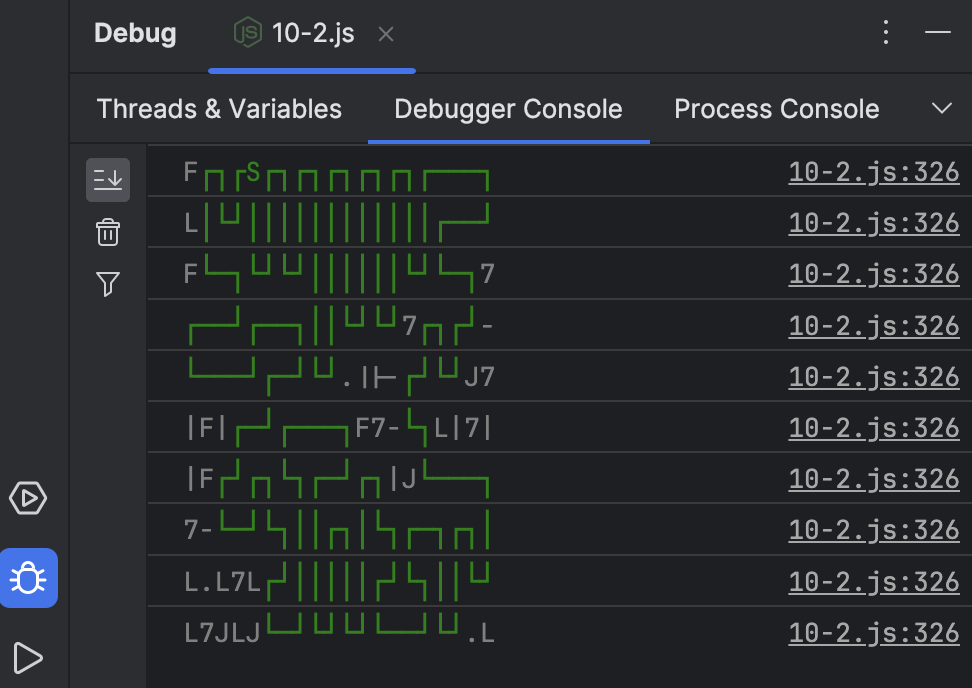
const validConnections = new Map([
['F', {
left: new Set(),
top: new Set(),
right: new Set(['-', '7', 'J', 'S']),
bottom: new Set(['|', 'J', 'L', 'S']),
}],
['-', {
left: new Set(['-', 'F', 'L', 'S']),
top: new Set(),
right: new Set(['-', '7', 'J', 'S']),
bottom: new Set(),
}],
['7', {
left: new Set(['-', 'F', 'L', 'S']),
top: new Set(),
right: new Set(),
bottom: new Set(['|', 'J', 'L', 'S']),
}],
['|', {
left: new Set(),
top: new Set(['|', 'F', '7', 'S']),
right: new Set(),
bottom: new Set(['|', 'J', 'L', 'S']),
}],
['L', {
left: new Set(),
top: new Set(['|', 'F', '7', 'S']),
right: new Set(['-', '7', 'J', 'S']),
bottom: new Set(),
}],
['J', {
left: new Set(['-', 'F', 'L', 'S']),
top: new Set(['|', 'F', '7', 'S']),
right: new Set(),
bottom: new Set(),
}],
['S', {
left: new Set(['-', 'F', 'L']),
top: new Set(['|', 'F', '7']),
right: new Set(['-', '7', 'J']),
bottom: new Set(['|', 'J', 'L']),
}],
]);
const reversedDirections = new Map([
['left', 'right'],
['right', 'left'],
['top', 'bottom'],
['bottom', 'top'],
]);
class Graph {
/** @type {Map<string, string>} */
#points = new Map();
/** @type {Map<string, Set<string>>} */
#matchingPipes = new Map();
/** @type {Map<string, Set<string>>} */
#adjacency = new Map();
#sPoint = '';
#height = NaN;
#width = Number.NEGATIVE_INFINITY;
#mainLoop = new Set();
#input = '';
constructor(input) {
const lines = input.split('\n');
this.#input = input;
this.#height = lines.length - 1;
lines.forEach((line, y) => {
line = line.trim();
for (let x = 0; x < line.length; x++) {
const point = this.toPoint(x, y);
const value = line[x];
if (value === 'S') {
this.#sPoint = point;
}
this.#points.set(point, value);
this.#matchingPipes.set(point, new Set());
this.#adjacency.set(point, new Set());
this.#connectNeighbors(x, y);
this.#width = Math.max(this.#width, x);
}
});
this.#mainLoop = this.#mainCycle();
}
inMainLoop(point) {
return this.#mainLoop.has(point);
}
nonCycleNeighborsOf(point) {
return [...this.#adjacency.get(point)].filter(neighbor => !this.#mainLoop.has(neighbor));
}
/**
* @param {Set<string>} points
* @type {Set<string>}
*/
allButMainLoopAnd(points) {
const result = new Set();
this.#input.split('\n').forEach((line, y) => {
line = line.trim();
for (let x = 0; x < line.length; x++) {
const point = this.toPoint(x, y);
if (!this.#mainLoop.has(point) && !points.has(point)) {
result.add(point);
}
}
});
return result;
}
toPoint(x, y) {
return `${x},${y}`;
}
fromPoint(point) {
return point.split(',').map(Number);
}
get length() {
return this.#mainLoop.size;
}
#connectNeighbors(x, y) {
const {left, top, right, bottom}
= this.#potentialNeighborsOf(x, y);
const current = this.toPoint(x, y);
const currentValue = this.#points.get(current);
const [leftValue, topValue, rightValue, bottomValue]
= [left, top, right, bottom]
.map(point => this.#points.get(point));
if (leftValue) {
this.#adjacency.get(current).add(left);
this.#adjacency.get(left).add(current);
if (this.#canConnect(currentValue, leftValue, 'left')) {
this.#matchingPipes.get(current).add(left);
this.#matchingPipes.get(left).add(current);
}
}
if (topValue) {
this.#adjacency.get(current).add(top);
this.#adjacency.get(top).add(current);
if (this.#canConnect(currentValue, topValue, 'top')) {
this.#matchingPipes.get(current).add(top);
this.#matchingPipes.get(top).add(current);
}
}
if (rightValue) {
this.#adjacency.get(current).add(right);
this.#adjacency.get(right).add(current);
if (this.#canConnect(currentValue, rightValue, 'right')) {
this.#matchingPipes.get(current).add(right);
this.#matchingPipes.get(right).add(current);
}
}
if (bottomValue) {
this.#adjacency.get(current).add(bottom);
this.#adjacency.get(bottom).add(current);
if (this.#canConnect(currentValue, bottomValue, 'bottom')) {
this.#matchingPipes.get(current).add(bottom);
this.#matchingPipes.get(bottom).add(current);
}
}
}
#potentialNeighborsOf(x, y) {
return {
left: this.toPoint(x - 1, y),
top: this.toPoint(x, y - 1),
right: this.toPoint(x + 1, y),
bottom: this.toPoint(x, y + 1),
};
}
#canConnect(value, potentialNeighborValue, direction) {
return validConnections.has(value) &&
validConnections.get(value)[direction].has(potentialNeighborValue) &&
validConnections.get(potentialNeighborValue)[reversedDirections.get(direction)].has(value);
}
#mainCycle() {
const visited = new Set();
const queue = [this.#sPoint];
while (queue.length > 0) {
const current = queue.shift();
if (visited.has(current)) {
continue;
}
visited.add(current);
this.#cycleNeighborsOf(current).forEach(neighbor => queue.push(neighbor));
}
return visited;
}
#cycleNeighborsOf(current) {
return [...this.#matchingPipes.get(current)].filter(point => this.#matchingPipes.get(point).size === 2)
}
}
function scaleUpTimes3(input) {
const result = [];
input.split('\n').forEach((line) => {
line = line.trim();
let row = '';
let row2 = '';
let row3 = '';
for (let x = 0; x < line.length; x++) {
const resizedValue = resizeTimes3(line[x]);
row += resizedValue[0];
row2 += resizedValue[1];
row3 += resizedValue[2];
}
result.push(row, row2, row3);
});
return result.join('\n');
}
const defaultResizeTimes3 = [
'...',
'...',
'...',
];
const resizedTimes3 = new Map([
['F', [
'...',
'.F-',
'.|.',
]],
['-', [
'...',
'---',
'...',
]],
['7', [
'...',
'-7.',
'.|.',
]],
['|', [
'.|.',
'.|.',
'.|.',
]],
['L', [
'.|.',
'.L-',
'...',
]],
['J', [
'.|.',
'-J.',
'...',
]],
['S', [
'.|.',
'-S-',
'.|.',
]],
]);
function resizeTimes3(value) {
return resizedTimes3.get(value) ?? defaultResizeTimes3;
}
function enclosedPoints(input) {
const originalGraph = new Graph(input);
// prettyPrint(input, originalGraph);
const graph = new Graph(scaleUpTimes3(input));
const stack = [graph.toPoint(0, 0)];
const floodFilled = new Set();
while (stack.length > 0) {
const current = stack.pop();
if (floodFilled.has(current)) {
continue;
}
floodFilled.add(current);
stack.push(...graph.nonCycleNeighborsOf(current));
}
return [
...new Set(
[...graph.allButMainLoopAnd(floodFilled)]
.map(point => graph.fromPoint(point))
.map(([x, y]) => graph.toPoint(x / 3 | 0, y / 3 | 0))
)]
.filter(point => !originalGraph.inMainLoop(point))
.length;
}
const beautifyDict = new Map([
['F', '┌'],
['-', '─'],
['7', '┐'],
['|', '│'],
['L', '└'],
['J', '┘'],
['S', 'S'],
]);
function prettyPrint(input, graph = new Graph(input)) {
let text = '';
input.split('\n').forEach((line, y) => {
line = line.trim();
const firstPoint = graph.toPoint(0, y);
let previousInMain = graph.inMainLoop(firstPoint);
let formattedText = (previousInMain ? beautifyDict.get(line[0]) : line[0]);
for (let x = 1; x < line.length; x++) {
const value = line[x];
const point = graph.toPoint(x, y);
if (graph.inMainLoop(point)) {
if (previousInMain) {
formattedText += beautifyDict.get(value);
continue;
}
formattedText += beautifyDict.get(value);
previousInMain = true;
continue;
}
if (previousInMain) {
formattedText += value;
previousInMain = false;
continue;
}
formattedText += value;
}
text += formattedText + '\n';
});
console.log(text);
}
prettyPrint(`FF7FSF7F7F7F7F7F---7
L|LJ||||||||||||F--J
FL-7LJLJ||||||LJL-77
F--JF--7||LJLJ7F7FJ-
L---JF-JLJ.||-FJLJJ7
|F|F-JF---7F7-L7L|7|
|FFJF7L7F-JF7|JL---7
7-L-JL7||F7|L7F-7F7|
L.L7LFJ|||||FJL7||LJ
L7JLJL-JLJLJL--JLJ.L`);
Day 11
Day 11
dijkstraBetweenGalaxies(start, galaxyPathFoundCallback, optionalEnd) {
if (!this.#galaxies.has(start)) {
throw new Error('Not a galaxy');
}
const queue = new BinaryHeap();
const pathToOtherGalaxies = new Map();
const dist = new Map();
dist.set(start, 0);
queue.push(start, 0);
while (queue.length > 0) {
const currentPoint = queue.pop();
if (this.#galaxies.has(currentPoint) && currentPoint !== start && (!optionalEnd || currentPoint === optionalEnd)) {
galaxyPathFoundCallback(dist.get(currentPoint));
if (optionalEnd) {
return;
}
}
this.#adjacency.get(currentPoint).forEach((neighbor) => {
const potentialDistance = dist.get(currentPoint) + this.#weight(currentPoint, neighbor);
if (!dist.has(neighbor) || potentialDistance < dist.get(neighbor)) {
dist.set(neighbor, potentialDistance);
pathToOtherGalaxies.set(neighbor, currentPoint);
if (queue.has(neighbor)) {
queue.update(neighbor, potentialDistance);
} else {
queue.push(neighbor, potentialDistance);
}
}
});
}
}
Day 11
bfsBetweenGalaxies(start, galaxyPathFoundCallback, optionalEnd) {
if (!this.#galaxies.has(start)) {
throw new Error('Not a galaxy');
}
const queue = [start];
const visited = new Set([start]);
const pathToOtherGalaxies = new Map();
while (queue.length > 0) {
const currentPoint = queue.shift();
if (this.#galaxies.has(currentPoint) && currentPoint !== start && (!optionalEnd || currentPoint === optionalEnd)) {
const fromCurrentToStart = [];
let currentPathPoint = currentPoint;
while (currentPathPoint !== start) {
fromCurrentToStart.push(currentPathPoint);
currentPathPoint = pathToOtherGalaxies.get(currentPathPoint);
}
galaxyPathFoundCallback(fromCurrentToStart.reverse());
if (optionalEnd) {
return;
}
}
this.#adjacency.get(currentPoint).forEach((neighbor) => {
if (visited.has(neighbor)) {
return;
}
visited.add(neighbor);
queue.push(neighbor);
pathToOtherGalaxies.set(neighbor, currentPoint);
});
}
}
Day 12
console.time();
console.log(countAllArrangements(`input here`));
console.timeEnd();
Day 13
Mirror? One or many?
function transpose(arr) {
return arr[0].map((_, i) => arr.map(row => row[i]));
}
transpose([
["A", "B", "C"],
["D", "E", "F"]
])
Day 14
transpose!- Array of stack of results
- EZ!
Mappreserves the order - Performant? DP? Premature optimization
- Good abstractions = smooth 2nd part
- Pick's theorem, Shoelace formula
Day 19
export function parsePart(input) {
return eval(`(function() { return ${input}; })()`.replaceAll('=', ':'));
}
Day 20
- Redux/Flux, no TDD
-
Got from HyperNeutrino
- Input data analysis
- Graphviz, looking for cycles
Day 21
- Misleading example
- Even more input data analysis
Day 22
Day 23
- Longest path
- Skipped - had enough
Day 24
- Maths - crossing points
-
Z3👎🏻
Day 25
- Karger's min cut
- No 2nd ⭐️ as no 2nd stars in above 2
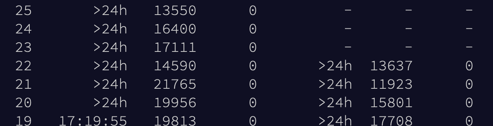
{kind=link}